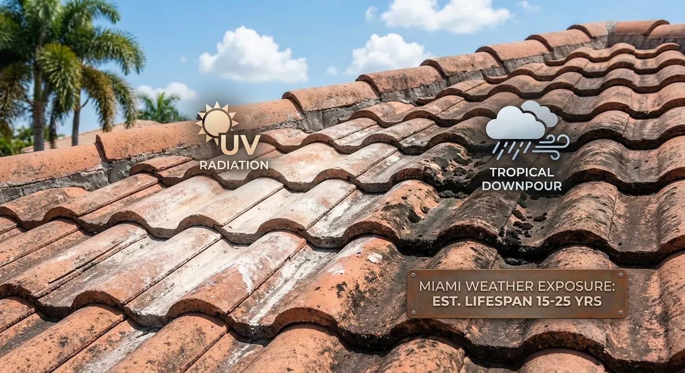

Storm Damage Roof Repair in Miami, FL
Florida storms can damage roofing materials, flashing and other parts of a roof. This guide explains common types of storm-related roof damage and practical steps property owners can take after conditions are safe.
Common storm-related roof problems
- Missing or damaged shingles, tiles or panels
- Roof leaks after severe weather
- Damaged flashing and exposed areas
- Visible wind or impact damage
- Debris or fallen branches affecting the roof
What to do after a storm
Stay clear of unsafe roof areas, protect interior belongings from water when possible and document visible damage safely. Do not climb onto a damaged roof. A professional assessment can help determine whether repair, temporary protection or replacement is appropriate.
Storm damage and insurance
If you plan to make an insurance claim, document visible damage and keep relevant photos, reports and project records. Coverage depends on the specific policy and circumstances, so do not assume that every storm-related repair is covered.
Request a Miami storm damage assessment
Use the quote-request form to share basic project details for review. A submission is an inquiry only and does not guarantee a roof inspection, contractor availability, price or project acceptance.
Request a Roofing QuoteRelated Miami roofing resources
Emergency roof repair · Hurricane roof damage guide · Roof insurance claims guide · Roof inspection